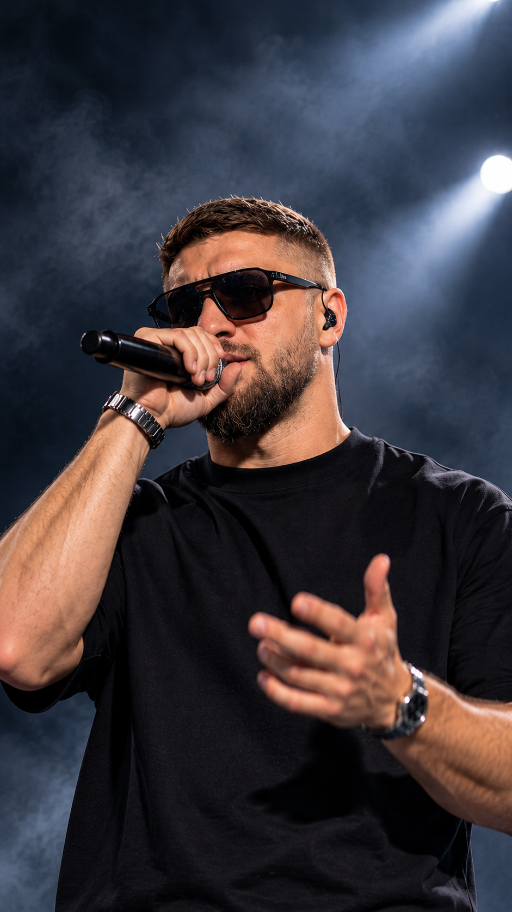

Скоро
Предстоящие релизы
Подпишитесь на пресейв
Официальный сайт артиста
Музыка,
которая
остаётся.
Vaso13 — песни о чувствах, выборе и моментах, которые хочется прожить ещё раз. Слушайте новые релизы и находите свою историю.

Vaso13 · живое выступление
СЛУШАТЬ НА ПЛОЩАДКАХ
Музыка Vaso13
Выберите удобный сервис
Каталог Vaso13
Треки и релизы
6
СП
СинглЧ
ТрекББ
СинглЗП
СинглНК
Новый релизЯ
СинглСсылки на треки ведут на официальные страницы артиста или релизов.
Vaso13
Об артисте
Vaso13 — независимый артист, который соединяет личные истории, мелодичный хип-хоп и атмосферные припевы. В его песнях — любовь, память, характер и ночной город. Следите за новыми релизами и выбирайте площадку, где вам удобно слушать.
Связаться с Vaso13
Контакты
Музыка, сотрудничество и новости